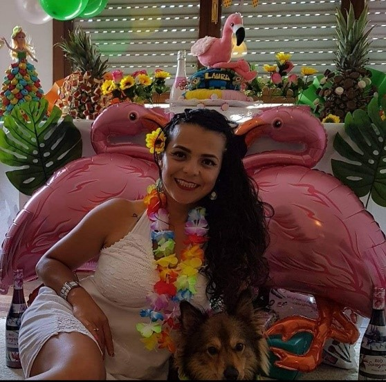
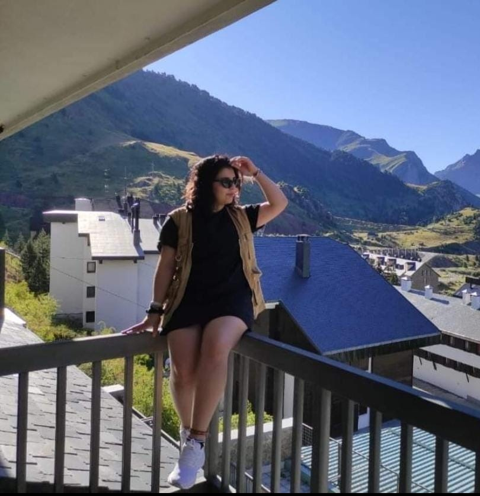
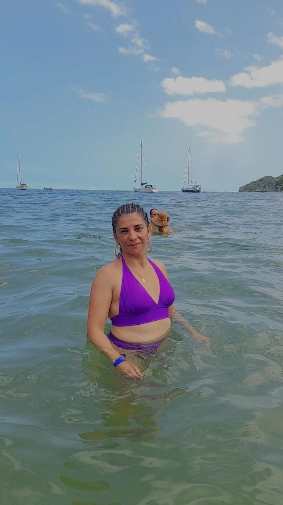

Mi Proyecto - Mi Pensamiento
Influencia Familiar
| Parentesco | Habilidades | ¿Quienes son ahora? | Proyecciones a Futuro | Foto |
|---|---|---|---|---|
Tia Yenny |
1. Habilidades al expresarse verbalmente. 2. Habilidades creativas |
Actualmente se encuentra fuera del pais estudiante para ser Auxiliar de Enfermeria en España | A futuro se ve con su esposo y su perrito en un apartamento propio trabajando en lo que esta estudiando |

|
Madre Luz Dary |
1. Habilidad al hablar. 2. Habilidades financieras |
Actualmente es operaria-cajera de un parqueadero | A futuro se ve en otro pais, con un trabajo menos pesado teniendo un residencia propia para poder vivir junto a sus hijos |

|
Prima Laura |
1. Cuidado personas 2. Habilidades linguisticas |
Actualmente trabaja en una farmacia | A futuro se ve viviendo con su novio en una vivienda propia teniendo una vida ecomicamente estable con su pareja |

|
Tio Andres |
1. Habilidades al expresarse al hablar | Actualmente trabaja como independientemente vendiendo material | A futuro se ve construyendo su casa en el terreno que ya tiene, teniendo una vida estable con su esposa y a su hijo dandole una buena calidad de educacion |